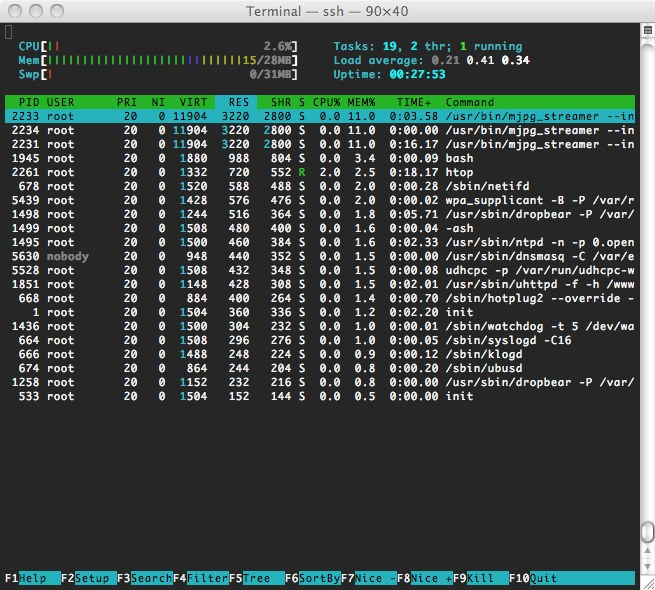

Installing OpenWRT on a TL-WR703N router using a USB stick as storage
22 Sep 2012
The situation
I have actually been working with the TL-WR703N for a while. I got I2C hardware control to work, and it has been serving mjpeg-streamer images from a webcam happily for a while. There has been some crashing, however, and when I got a better webcam (Logitech C920) as a gift, the crashing is now 100% once the camera is put to work. So, let’s try an upgrade to the latest release of openwrt, and take the chance to document the steps along the way.
YMMV, of course. This is Linux, after all.
Note that I am installing from an existing install. So, some settings are taken from the older install. I am trying to document settings where possible, but it could be that I am missing something. The router specific pages of the OpenWRT wiki clearly document how to install the first time, and how to make a USB filesystem.
Mirroring the openwrt folders
Although not strictly required, I like to mirror the openwrt downloads folder. This keeps all files compatible, as the trunk files get changed nearly every day and I do not have 100% faith in my ability to manage all the possible version conflicts (did I ever say I hate Linux for all the version conflicts?). This is not very polite, so don’t do it often.
wget -mk -w 20 http://downloads.openwrt.org/snapshots/trunk/ar71xx/
I am on OS X, and perform above wget in the
/Library/WebServer/Documents folder. This allows the OS X web server
(enable it first) to serve the files, so that I can opkg update and
opkg install locally: nice to have.
Flashing the new version
Update: I did end up running into issues on this install. You may want to scroll down to ‘fixing space issues’ to get my updates from there first.
wget http://192.168.1.102/downloads.openwrt.org/snapshots/trunk/ar71xx/ md5sums
wget http://192.168.1.102/downloads.openwrt.org/snapshots/trunk/ar71xx/openwrt-ar71xx-generic-tl-wr703n-v1-squashfs-sysupgrade.bin
md5sum -c md5sums
This should report that (n-1) out of n files failed (so 1 passed) :-)
sysupgrade -v
/tmp/openwrt-ar71xx-generic-tl-wr703n-v1-squashfs-sysupgrade.bin
And hold your breath…
According to the wiki, the files in the libraries folder will still be loaded. Scary…
root@OpenWrt:/tmp# ls /lib/modules/3.3.8/
aes_generic.ko iptable_nat.ko ppp_generic.ko
arc4.ko iptable_raw.ko pppoe.ko
ath.ko jbd2.ko pppox.ko
ath79_wdt.ko leds-gpio.ko scsi_mod.ko
ath9k.ko ledtrig-default-on.ko sd_mod.ko
ath9k_common.ko ledtrig-netdev.ko sg.ko
ath9k_hw.ko ledtrig-timer.ko slhc.ko
cfg80211.ko ledtrig-usbdev.ko usb-common.ko
compat.ko mac80211.ko usb-storage.ko
crc-ccitt.ko mbcache.ko usbcore.ko
crc16.ko nf_conntrack.ko x_tables.ko
crypto_algapi.ko nf_conntrack_ftp.ko xt_CT.ko
ehci-hcd.ko nf_conntrack_ipv4.ko xt_NOTRACK.ko
ext4.ko nf_conntrack_irc.ko xt_TCPMSS.ko
gpio-button-hotplug.ko nf_defrag_ipv4.ko xt_comment.ko
ip_tables.ko nf_nat.ko xt_conntrack.ko
ipt_LOG.ko nf_nat_ftp.ko xt_limit.ko
ipt_MASQUERADE.ko nf_nat_irc.ko xt_mac.ko
ipt_REJECT.ko nls_base.ko xt_multiport.ko
iptable_filter.ko ohci-hcd.ko xt_state.ko
iptable_mangle.ko ppp_async.ko xt_tcpudp.ko
It did actually auto-reboot and it is the newest kernel. Nice! Now I need to figure out how to update all the programs and kernel modules.
It actually seems that my user space packages are gone (for example, e2fsck). How about kernel modules?
root@OpenWrt:~# ls /lib/modules/3.3.8/
aes_generic.ko iptable_nat.ko ppp_generic.ko
arc4.ko iptable_raw.ko pppoe.ko
ath.ko leds-gpio.ko pppox.ko
ath79_wdt.ko ledtrig-default-on.ko slhc.ko
ath9k.ko ledtrig-netdev.ko usb-common.ko
ath9k_common.ko ledtrig-timer.ko usbcore.ko
ath9k_hw.ko ledtrig-usbdev.ko x_tables.ko
cfg80211.ko mac80211.ko xt_CT.ko
compat.ko nf_conntrack.ko xt_NOTRACK.ko
crc-ccitt.ko nf_conntrack_ftp.ko xt_TCPMSS.ko
crypto_algapi.ko nf_conntrack_ipv4.ko xt_comment.ko
ehci-hcd.ko nf_conntrack_irc.ko xt_conntrack.ko
gpio-button-hotplug.ko nf_defrag_ipv4.ko xt_limit.ko
ip_tables.ko nf_nat.ko xt_mac.ko
ipt_LOG.ko nf_nat_ftp.ko xt_multiport.ko
ipt_MASQUERADE.ko nf_nat_irc.ko xt_state.ko
ipt_REJECT.ko nls_base.ko xt_tcpudp.ko
iptable_filter.ko ohci-hcd.ko
iptable_mangle.ko ppp_async.ko
Also /usr/lib/ seems to be ok:
root@OpenWrt:~# ls /usr/lib/
iptables libip4tc.so.0.0.0 libnl-tiny.so libxtables.so.5.0.0
libip4tc.so libjson.so.0 libxtables.so opkg
libip4tc.so.0 libjson.so.0.0.1 libxtables.so.5 pppd
root@OpenWrt:~#
Installing required stuff for USB & cleaning up
Edit opkg.conf to send it to the mirrored packages:
#src/gz kippy http://10.0.0.102/downloads.openwrt.org/snapshots/trunk/ar71xx/packages
src/gz kippy http://192.168.1.102/downloads.openwrt.org-r32130/snapshots/trunk/ar71xx/pack
#src/gz attitude_adjustment http://downloads.openwrt.org/snapshots/trunk/ar71xx/packages
dest root /
dest ram /tmp
lists_dir ext /var/opkg-lists
option overlay_root /overlay
These are my settings (note, I have 2 different IP ranges depending on weither I’m hard-wiring the router to my laptop, or going through WiFi). Wrong address for the link: This should have been without the revision number.
Then:
opkg update
opkg install kmod-usb-storage block-mount swap-utils kmod-fs-ext4 kmod-scsi-generic
root@OpenWrt:~# opkg install kernel kmod-usb-storage block-mount swap-utils kmod-fs-ext4 k
mod-scsi-generic
Package kernel (3.3.8-1-5566392ba3947228e76b8c9283f833d0) installed in root is up to date.
Installing kmod-usb-storage (3.3.8-1) to root...
Downloading http://192.168.1.102/downloads.openwrt.org-r32130/snapshots/trunk/ar71xx/packages/kmod-usb-storage_3.3.8-1_ar71xx.ipk.
Package block-mount (0.2.0-8) installed in root is up to date.
Package swap-utils (2.21.1-1) installed in root is up to date.
Installing kmod-fs-ext4 (3.3.8-1) to root...
Downloading http://192.168.1.102/downloads.openwrt.org-r32130/snapshots/trunk/ar71xx/packages/kmod-fs-ext4_3.3.8-1_ar71xx.ipk.
Installing kmod-scsi-generic (3.3.8-1) to root...
Downloading http://192.168.1.102/downloads.openwrt.org-r32130/snapshots/trunk/ar71xx/packages/kmod-scsi-generic_3.3.8-1_ar71xx.ipk.
Collected errors:
* satisfy_dependencies_for: Cannot satisfy the following dependencies for kmod-usb-storage:
* kernel (= 3.3.8-1-ce90e6b3a0d7ebfa8f36ba3494997207) * kernel (= 3.3.8-1-ce90e6b3a0d7ebfa8f36ba3494997207) *
* opkg_install_cmd: Cannot install package kmod-usb-storage.
* satisfy_dependencies_for: Cannot satisfy the following dependencies for kmod-fs-ext4:
* kernel (= 3.3.8-1-ce90e6b3a0d7ebfa8f36ba3494997207) * kernel (= 3.3.8-1-ce90e6b3a0d7ebfa8f36ba3494997207) *
* opkg_install_cmd: Cannot install package kmod-fs-ext4.
* satisfy_dependencies_for: Cannot satisfy the following dependencies for kmod-scsi-generic:
* kernel (= 3.3.8-1-ce90e6b3a0d7ebfa8f36ba3494997207) *
* opkg_install_cmd: Cannot install package kmod-scsi-generic.
root@OpenWrt:~#
Apparently the kernel has updated during my mirroring? Rats… Nope, I had the incorrect folder set in my opkg.conf, so it was fetching old package data.
root@OpenWrt:~# wget http://192.168.1.102/downloads.openwrt.org/snapshots/trunk/ar71xx/pac
kages/kernel_3.3.8-1-5566392ba3947228e76b8c9283f833d0_ar71xx.ipk
Connecting to 192.168.1.102 (192.168.1.102:80)
kernel_3.3.8-1-55663 100% |*****************************************| 714 0:00:00 ETA
root@OpenWrt:~# opkg install ./kernel_3.3.8-1-5566392ba3947228e76b8c9283f833d0_ar71xx.ipk
Installing kernel (3.3.8-1-5566392ba3947228e76b8c9283f833d0) to root...
Configuring kernel.
root@OpenWrt:~# opkg install ./kmod-scsi-core_3.3.8-1_ar71xx.ipk
Installing kmod-scsi-core (3.3.8-1) to root...
Configuring kmod-scsi-core.
root@OpenWrt:~# opkg install kmod-scsi-generic
Installing kmod-scsi-generic (3.3.8-1) to root...
Downloading http://192.168.1.102/downloads.openwrt.org/snapshots/trunk/ar71xx/packages/kmod-scsi-generic_3.3.8-1_ar71xx.ipk.
Collected errors:
* satisfy_dependencies_for: Cannot satisfy the following dependencies for kmod-scsi-generic:
* kernel (= 3.3.8-1-ce90e6b3a0d7ebfa8f36ba3494997207) *
* opkg_install_cmd: Cannot install package kmod-scsi-generic.
root@OpenWrt:~# opkg download kmod-scsi-generic
Downloading http://192.168.1.102/downloads.openwrt.org/snapshots/trunk/ar71xx/packages/kmod-scsi-generic_3.3.8-1_ar71xx.ipk.
Downloaded kmod-scsi-generic as ./kmod-scsi-generic_3.3.8-1_ar71xx.ipk.
root@OpenWrt:~# opkg install ./kmod-scsi-generic_3.3.8-1_ar71xx.ipk
Installing kmod-scsi-generic (3.3.8-1) to root...
Configuring kmod-scsi-generic.
root@OpenWrt:~#
What’s wrong with opkg? It can download, and it can install. But not together??
oot@OpenWrt:~# opkg install kmod-usb-storage block-mount swap-utils kmod-fs-ext4 kmod-scs
i-generic
Installing kmod-usb-storage (3.3.8-1) to root...
Downloading http://192.168.1.102/downloads.openwrt.org/snapshots/trunk/ar71xx/packages/kmod-usb-storage_3.3.8-1_ar71xx.ipk.
Package block-mount (0.2.0-9) installed in root is up to date.
Package swap-utils (2.21.2-1) installed in root is up to date.
Installing kmod-fs-ext4 (3.3.8-1) to root...
Downloading http://192.168.1.102/downloads.openwrt.org/snapshots/trunk/ar71xx/packages/kmod-fs-ext4_3.3.8-1_ar71xx.ipk.
Package kmod-scsi-generic (3.3.8-1) installed in root is up to date.
Collected errors:
* satisfy_dependencies_for: Cannot satisfy the following dependencies for kmod-usb-storage:
* kernel (= 3.3.8-1-ce90e6b3a0d7ebfa8f36ba3494997207) *
* opkg_install_cmd: Cannot install package kmod-usb-storage.
* satisfy_dependencies_for: Cannot satisfy the following dependencies for kmod-fs-ext4:
* kernel (= 3.3.8-1-ce90e6b3a0d7ebfa8f36ba3494997207) *
* opkg_install_cmd: Cannot install package kmod-fs-ext4.
root@OpenWrt:~# opkg download kmod-usb-storage
Downloading http://192.168.1.102/downloads.openwrt.org/snapshots/trunk/ar71xx/packages/kmod-usb-storage_3.3.8-1_ar71xx.ipk.
Downloaded kmod-usb-storage as ./kmod-usb-storage_3.3.8-1_ar71xx.ipk.
root@OpenWrt:~# opkg install ./kmod-usb-storage_3.3.8-1_ar71xx.ipk
Installing kmod-usb-storage (3.3.8-1) to root...
Configuring kmod-usb-storage.
root@OpenWrt:~# opkg install kmod-usb-storage block-mount swap-utils kmod-fs-ext4 kmod-scs
i-generic
Package kmod-usb-storage (3.3.8-1) installed in root is up to date.
Package block-mount (0.2.0-9) installed in root is up to date.
Package swap-utils (2.21.2-1) installed in root is up to date.
Installing kmod-fs-ext4 (3.3.8-1) to root...
Downloading http://192.168.1.102/downloads.openwrt.org/snapshots/trunk/ar71xx/packages/kmod-fs-ext4_3.3.8-1_ar71xx.ipk.
Package kmod-scsi-generic (3.3.8-1) installed in root is up to date.
Collected errors:
* satisfy_dependencies_for: Cannot satisfy the following dependencies for kmod-fs-ext4:
* kernel (= 3.3.8-1-ce90e6b3a0d7ebfa8f36ba3494997207) *
* opkg_install_cmd: Cannot install package kmod-fs-ext4.
root@OpenWrt:~# opkg download kmod-fs-ext4
Downloading http://192.168.1.102/downloads.openwrt.org/snapshots/trunk/ar71xx/packages/kmod-fs-ext4_3.3.8-1_ar71xx.ipk.
Downloaded kmod-fs-ext4 as ./kmod-fs-ext4_3.3.8-1_ar71xx.ipk.
root@OpenWrt:~# opkg install ./kmod-fs-ext4_3.3.8-1_ar71xx.ipk
Installing kmod-fs-ext4 (3.3.8-1) to root...
Installing kmod-lib-crc16 (3.3.8-1) to root...
Downloading http://192.168.1.102/downloads.openwrt.org/snapshots/trunk/ar71xx/packages/kmod-lib-crc16_3.3.8-1_ar71xx.ipk.
Configuring kmod-lib-crc16.
Configuring kmod-fs-ext4.
root@OpenWrt:~#
Finally…
root@OpenWrt:~# opkg list-upgradable
libblkid - 2.21.1-1 - 2.21.2-1
libuuid - 2.21.1-1 - 2.21.2-1
blkid - 2.21.1-1 - 2.21.2-1
root@OpenWrt:~# opkg install libblkid libuuid blkid
Upgrading libblkid on root from 2.21.1-1 to 2.21.2-1...
Downloading http://192.168.1.102/downloads.openwrt.org/snapshots/trunk/ar71xx/packages/libblkid_2.21.2-1_ar71xx.ipk.
Upgrading libuuid on root from 2.21.1-1 to 2.21.2-1...
Downloading http://192.168.1.102/downloads.openwrt.org/snapshots/trunk/ar71xx/packages/libuuid_2.21.2-1_ar71xx.ipk.
Upgrading blkid on root from 2.21.1-1 to 2.21.2-1...
Downloading http://192.168.1.102/downloads.openwrt.org/snapshots/trunk/ar71xx/packages/blkid_2.21.2-1_ar71xx.ipk.
Configuring libuuid.
Configuring libblkid.
Configuring blkid.
root@OpenWrt:~#
Some updates
reboot
Plugin flash drive. Is recognized as /dev/sdb1. Will this change? Reboot again with disk plugged in (but first check fstab and disable partitions).
root@OpenWrt:~# mount
rootfs on / type rootfs (rw)
/dev/root on /rom type squashfs (ro,relatime)
proc on /proc type proc (rw,noatime)
sysfs on /sys type sysfs (rw,noatime)
tmpfs on /tmp type tmpfs (rw,nosuid,nodev,noatime,size=14580k)
tmpfs on /dev type tmpfs (rw,noatime,size=512k,mode=755)
devpts on /dev/pts type devpts (rw,noatime,mode=600)
/dev/mtdblock3 on /overlay type jffs2 (rw,noatime)
overlayfs:/overlay on / type overlayfs (rw,relatime,lowerdir=/,upperdir=/overlay)
debugfs on /sys/kernel/debug type debugfs (rw,relatime)
none on /proc/bus/usb type usbfs (rw,relatime)
root@OpenWrt:~# mkdir /mnt/flash
root@OpenWrt:~# mount -t ext4 /dev/sd
sda sda1 sda2 sdb
root@OpenWrt:~# mount -t ext4 /dev/sda2 /mnt/flash
mount: mounting /dev/sda2 on /mnt/flash failed: Invalid argument
root@OpenWrt:~# mount -t ext4 /dev/sda2 /mnt/flash
mount: mounting /dev/sda2 on /mnt/flash failed: Invalid argument
root@OpenWrt:~# mount /dev/sda2 /mnt/flash
mount: mounting /dev/sda2 on /mnt/flash failed: Invalid argument
root@OpenWrt:~# vi /etc/config/fstab
config global automount
option from_fstab 1
option anon_mount 1
config global autoswap
option from_fstab 1
option anon_swap 0
config mount
option target /overlay
option device /dev/sda1
option fstype ext4
option options rw,sync
option enabled 0
option enabled_fsck 0
config swap
option device /dev/sda2
option enabled 0
and then
root@OpenWrt:~# mount /dev/sda1 /mnt/flash
root@OpenWrt:~# mkdir /mnt/flash
rm -Rf /mnt/flash/*
root@OpenWrt:~# tar -C /overlay -cvf - . | tar -C /mnt/flash -xf -
And then edit /etc/config/fstab
config global automount
option from_fstab 1
option anon_mount 1
config global autoswap
option from_fstab 1
option anon_swap 0
config mount
option target /overlay
option device /dev/sda1
option fstype ext4
option options rw,sync
option enabled 1
option enabled_fsck 1
config swap
option device /dev/sda2
option enabled 0
opkg install e2fsprogs
device full… Hrmpf again
Fixing space issue
Any time you play around and overwrite a file in flash, it wastes memory. This probably caused the out of memory issue here.
Redid everything, but no futzing, and sysupgrade -n -v instead of only -v Because of reset, telnet 192.168.1.1, passwd ^D, ssh root@192.168.1.1 I needed to delete the root@192.168.1.1 entry from ~/.ssh/known_hosts
/etc/opkg.conf:
#src/gz attitude_adjustment http://downloads.openwrt.org/snapshots/trunk/ar71xx/packages
src/gz kippy http://192.168.1.102/downloads.openwrt.org/snapshots/trunk/ar71xx/packages
dest root /
dest ram /tmp
lists_dir ext /var/opkg-lists
option overlay_root /overlay
root@OpenWrt:~# free
total used free shared buffers
Mem: 29156 18208 10948 0 1348
-/+ buffers: 16860 12296
Swap: 0 0 0
root@OpenWrt:~# df
Filesystem 1K-blocks Used Available Use% Mounted on
rootfs 1344 208 1136 15% /
/dev/root 1536 1536 0 100% /rom
tmpfs 14580 1860 12720 13% /tmp
tmpfs 512 0 512 0% /dev
root 14576 28 14548 0% /tmp/root
overlayfs:/tmp/root 14576 28 14548 0% /tmp/root
/dev/mtdblock3 1344 208 1136 15% /overlay
overlayfs:/overlay 1344 208 1136 15% /
root@OpenWrt:~#
opkg now works properly also and nothing is upgradeable
opkg install e2fsprogs
root@OpenWrt:~# free && df
total used free shared buffers
Mem: 29156 21740 7416 0 1492
-/+ buffers: 20248 8908
Swap: 0 0 0
Filesystem 1K-blocks Used Available Use% Mounted on
rootfs 1344 1132 212 84% /
/dev/root 1536 1536 0 100% /rom
tmpfs 14580 1860 12720 13% /tmp
tmpfs 512 0 512 0% /dev
root 14576 28 14548 0% /tmp/root
overlayfs:/tmp/root 14576 28 14548 0% /tmp/root
/dev/mtdblock3 1344 1132 212 84% /overlay
overlayfs:/overlay 1344 1132 212 84% /
/dev/sdb1 465960 24496 418072 6% /mnt/sdb1
root@OpenWrt:~#
root@OpenWrt:~# mount
rootfs on / type rootfs (rw)
/dev/root on /rom type squashfs (ro,relatime)
proc on /proc type proc (rw,noatime)
sysfs on /sys type sysfs (rw,noatime)
tmpfs on /tmp type tmpfs (rw,nosuid,nodev,noatime,size=14580k)
tmpfs on /dev type tmpfs (rw,noatime,size=512k,mode=755)
devpts on /dev/pts type devpts (rw,noatime,mode=600)
root on /tmp/root type tmpfs (rw,noatime,mode=755)
overlayfs:/tmp/root on /tmp/root type overlayfs (ro,noatime,lowerdir=/,upperdir=/tmp/root)
debugfs on /sys/kernel/debug type debugfs (rw,relatime)
none on /proc/bus/usb type usbfs (rw,relatime)
/dev/mtdblock3 on /overlay type jffs2 (rw,noatime)
overlayfs:/overlay on / type overlayfs (rw,noatime,lowerdir=/,upperdir=/overlay)
/dev/sdb1 on /mnt/sdb1 type ext4 (rw,relatime,user_xattr,barrier=1,data=ordered)
root@OpenWrt:~#
So the flash drive was automounted on /mnt/sdb1 (will be /sda1 when plugged in at boot).
root@OpenWrt:~# ls /mnt/sdb2/
root@OpenWrt:~# ls /mnt/sdb1/
etc lib mnt root sbin usr
root@OpenWrt:~# rm -Rf /mnt/sdb1/*
root@OpenWrt:~# ls /mnt/sdb1/
root@OpenWrt:~#
tar -C /overlay -cvf - . | tar -C /mnt/sdb1 -xf -
Bach to /etc/config/fstab:
config global automount
option from_fstab 1
option anon_mount 1
config global autoswap
option from_fstab 1
option anon_swap 0
config mount
option target /overlay
option device /dev/sda1
option fstype ext4
option options rw,sync
option enabled 1
option enabled_fsck 1
config swap
option device /dev/sda2
option enabled 1
reboot
root@OpenWrt:~# df && free
Filesystem 1K-blocks Used Available Use% Mounted on
rootfs 465960 24944 417624 6% /
/dev/root 1536 1536 0 100% /rom
tmpfs 14580 64 14516 0% /tmp
tmpfs 512 0 512 0% /dev
/dev/sda1 465960 24944 417624 6% /overlay
overlayfs:/overlay 465960 24944 417624 6% /
total used free shared buffers
Mem: 29156 17988 11168 0 1644
-/+ buffers: 16344 12812
Swap: 0 0 0
root@OpenWrt:~# mount
rootfs on / type rootfs (rw)
/dev/root on /rom type squashfs (ro,relatime)
proc on /proc type proc (rw,noatime)
sysfs on /sys type sysfs (rw,noatime)
tmpfs on /tmp type tmpfs (rw,nosuid,nodev,noatime,size=14580k)
tmpfs on /dev type tmpfs (rw,noatime,size=512k,mode=755)
devpts on /dev/pts type devpts (rw,noatime,mode=600)
/dev/sda1 on /overlay type ext4 (rw,sync,relatime,user_xattr,barrier=1,data=ordered)
overlayfs:/overlay on / type overlayfs (rw,relatime,lowerdir=/,upperdir=/overlay)
debugfs on /sys/kernel/debug type debugfs (rw,relatime)
none on /proc/bus/usb type usbfs (rw,relatime)
root@OpenWrt:~#
root@OpenWrt:~# swapon /dev/sda2
root@OpenWrt:~# free
total used free shared buffers
Mem: 29156 18208 10948 0 1664
-/+ buffers: 16544 12612
Swap: 32764 0 32764
root@OpenWrt:~#
And again back to /etc/config/fstab:
config global automount
option from_fstab 1
option anon_mount 1
config global autoswap
option from_fstab 1
option anon_swap 0
config mount
option target /home
option device /dev/sda1
option fstype ext4
option options rw,sync
option enabled 1
option enabled_fsck 1
config swap
option device /dev/sda2
option enabled 1
reboot to test
root@OpenWrt:~# mount && free && df
rootfs on / type rootfs (rw)
/dev/root on /rom type squashfs (ro,relatime)
proc on /proc type proc (rw,noatime)
sysfs on /sys type sysfs (rw,noatime)
tmpfs on /tmp type tmpfs (rw,nosuid,nodev,noatime,size=14580k)
tmpfs on /dev type tmpfs (rw,noatime,size=512k,mode=755)
devpts on /dev/pts type devpts (rw,noatime,mode=600)
/dev/sda1 on /overlay type ext4 (rw,sync,relatime,user_xattr,barrier=1,data=ordered)
overlayfs:/overlay on / type overlayfs (rw,relatime,lowerdir=/,upperdir=/overlay)
debugfs on /sys/kernel/debug type debugfs (rw,relatime)
none on /proc/bus/usb type usbfs (rw,relatime)
total used free shared buffers
Mem: 29156 17724 11432 0 1968
-/+ buffers: 15756 13400
Swap: 32764 0 32764
Filesystem 1K-blocks Used Available Use% Mounted on
rootfs 465960 24944 417624 6% /
/dev/root 1536 1536 0 100% /rom
tmpfs 14580 64 14516 0% /tmp
tmpfs 512 0 512 0% /dev
/dev/sda1 465960 24944 417624 6% /overlay
overlayfs:/overlay 465960 24944 417624 6% /
root@OpenWrt:~#
And now to install luci and mjpeg-streamer:
opkg update
opkg install luci
/etc/init.d/uhttpd enable
/etc/init.d/uhttpd start
opkg install htop bash
opkg install mjpg-streamer
and edit /etc/config/mjpg-streamer
config mjpg-streamer core
option enabled "1"
option device "/dev/video0"
option resolution "640x480"
option fps "10"
option www "/www/webcam0"
option port "8080"
root@OpenWrt:~# /etc/init.d/mjpg-streamer start
oops, forgot the kermel modules…
opkg install kmod-video-uvc
Now let’s check if it has been recognized:
[ 719.130000] usbcore: registered new interface driver uvcvideo
[ 719.130000] USB Video Class driver (1.1.1)
[ 726.590000] usb 1-1.3: USB disconnect, device number 5
[ 729.390000] usb 1-1.3: new high-speed USB device number 6 using ehci-platform
[ 729.520000] uvcvideo: Found UVC 1.00 device HD Pro Webcam C920 (046d:082d)
[ 729.540000] input: HD Pro Webcam C920 as /devices/platform/ehci-platform/usb1/1-1/1-1.3/1-1.3:1.0/input/input1
Does it work?
Hotplug already works and automatically starts the mjpeg-streamer daemon as soon as the webcam is plugged in, and kills it when it’s plugged out. Nice!
Memory limitations
When switching to higher resolutions, and/or higher framerates, I noticed lots of crashes of the router. This is a memory issue, where mjpg-streamer starts using too much. It needs several buffers of the size of the video frame to work, which at HDTV resolutions means lots of megabytes. I will try to upgrade the memory of the router to solve this, or at least alleviate it.
This is the memory status after all this (at 640x480):

Garbled images
The C920 camera seems to give garbled images when the frame rate is too high. This is probably due to some bug in the kernel drivers (or is it by design?) combined with the limited memory transfer bandwidth of these Atheros processors. It could be that the client reads from a buffer while another part of the buffer is still being written. Just guessing here: I’m no kernel expert.
Anyway, keeping the framerate low enough, everything is ok. I should not expect the world from a router that uses roughly 0.5W!
Instabilities
It seems that using the USB filesystem does cut down on the stability
of the overall system. I have incorporated a cron job to reboot every
24h, and monit to check the stability of various processes. That
way, things seem doable. In the future I will try and fit everything
into the flash to eliminate these instabilities. Janis Alnis
keeps a file with his notes online, that describes his experinces of doing this successfully
Web skeleton
The standard mjpeg-streamer package for openwrt has no www files
included, in order to reduce the storage requirements. I do want it
there, because it’s a quick way of getting some useful testing
done. So, I downloaded the full mjpeg-streamer distribution from their
website and copied the www folder into /www/webcam0/.